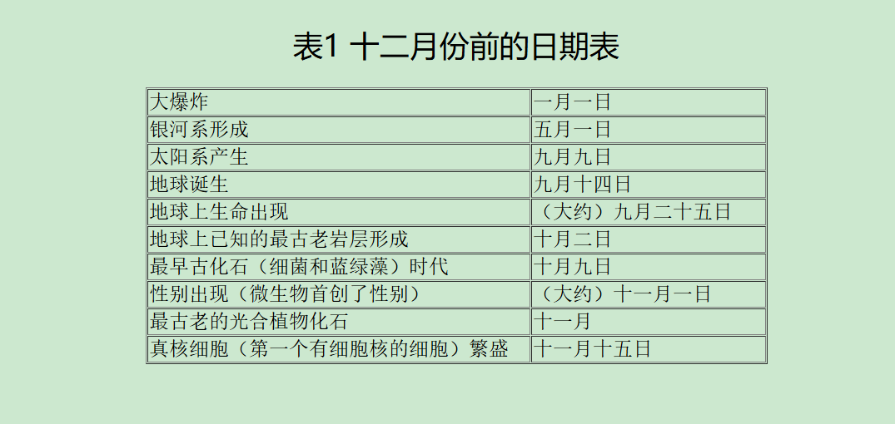
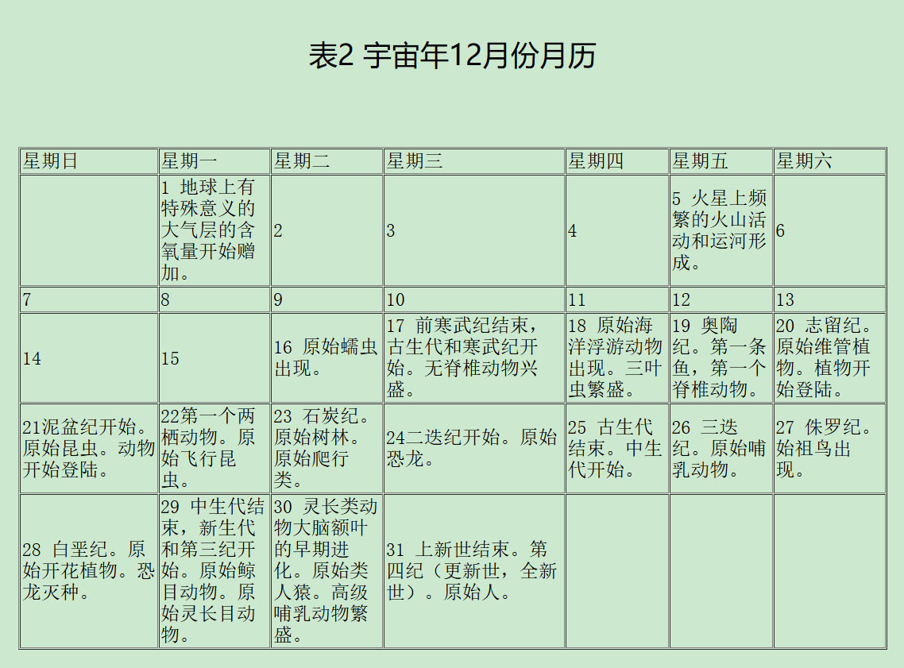
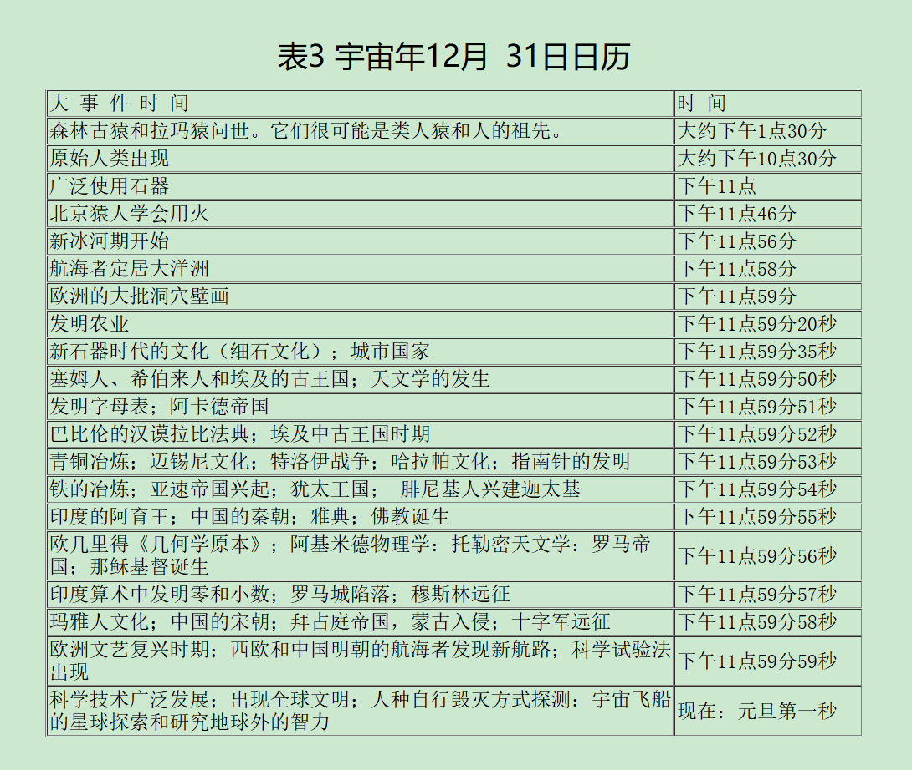

一、宇宙日历
地球形成的时间是很悠久的，而人类出现的时间还是不长的。每个人生活中的重大事件以年、月、日计算，我们的一生以数十年记载，我们的家谱以世纪划分，而整个有记载的历史则用千年来估量。在人类出现以前已有了相当长的一段历史，这段历史时期延续了几个纪代，而我们对这段历史的了解可以说是寥寥无几。产生这种情况一方面是由于没有文字记载，另一方面则困了解这个无限遥远的历史时期有着一定的实际困难。
远古时期某些事件的年代现在我们已经能够测定了。利用地质分层和使用放射性元素可以确定考古学、古生物学和地质学上发生的重要事件的年代。天体物理学的理论为确定行星表面、星体和银河系的年代提供了数据。同时也能估测出非常事件即大爆炸后到现在的大略时间。大爆炸可能是宇宙的开端。现代宇宙的所有物质和能量都陷入了这场大爆炸。我们也可以说，这是一场大中断，就在这场间断中，有关宇宙早期历史资料全被毁灭了，但大爆炸确实是我们有记载的最早的一次大事件。
据我所知，表达宇宙年表最有效益的方法，是设想把宇宙的150亿年：或者至少是自大爆炸后的具体时间）压缩成一年的时间。这样地球历史上的每十亿年就相当于宇宙年的24天左右，字宙年的每秒钟表示地球绕太阳运行475公转。我这里介绍三种宇宙年表：12月份前的日期表，12月份的月历和新年除夕夜晚的详细考察表。按这个换算法，现代和历代史书上的大事件都必须一秒钟一秒钟地列举记载。这样就能把我们学过的时间间隔较长的历史大事件表列出来。在人类生活史上，有许多重要事件可能发生在不同的时期，正象一个同样瑰丽的地毯，可能是在不同时期织成一样，如在4月6日或9月16日的上午1O点零 2分和10点零3分之间。但我们这里详细记载的只是宇宙年最后一天的日程，于是就不会发生时间重叠的情况了。这个年代和当前最通用的史料相符，但某些内容还不完全可靠。例如，假若最终证实了植物原是在奥陶纪而不是在志留纪登陆，或者证实节肢蠕虫的出现早于表中所说的前寒武纪，这也没有什么值得大惊小怪的。
此外，很明显要在表3中，宇宙年最后十秒钟的时间内，把所有重大事件都逐一列进去是不可能的。我没有详尽地提到艺术、音乐和文学上的进展，或者没有完全提到美国、法国、俄国和中国的革命以及重大历史事件，关于这一点我希望能够得到谅解。
可以意料，这样的年表和月、日历的设计仍是简陋的。在此宇宙年里，九月初地球还没从星际物质中冷凝形成，恐龙仅出现在圣诞节前夜，开花植物首次出现在12月28日，男人和女人的起源发生在除夕晚上十点半。所有人类有记载的历史都排在12月31日的最后十秒钟内。从中世纪的衰落到现在仅是一秒多时间。可正由于我这样精心的安排，第一个宇宙年恰好结束。虽然人类在宇宙年里所占的时间暂短，但意义却是非凡的。很明显，第二宇宙年的开端，在地球上或其附近将要发生什么变化，这完全取决于人类科学的智慧和人的清晰敏感的头脑了。
  